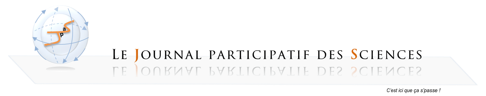

ACCUEIL
LE JOURNAL
SOUMETTRE
CONGRES
LIENS POST-DOCS
DOMAINES SCIENTIFIQUES
Santé
Physiologie
Environnement
Physique
Chimie
Agronomie
Univers
S. Humaines et Sociales
S. de L'inGénieur
CONTROVERSES
PARTENARIATS
Liens Post-docs
Vous aussi faites nous parvenir vos liens post-docs afin de les partager avec la communauté JPaS!
Entrez votre lien, nous nous chargeons de le mettre en ligne!
Voici l'ensemble des liens que les utilisateurs de JPaS nous ont fait découvrir:
-
http://www.intelliagence.fr/
-
http://www.unijobs.com.au/
-
http://evol.mcmaster.ca/evoldir.html
-
http://www.fapesp.br/oportunidades/
-
http://www.sfecologie.org
-
http://www.postdocjobs.com/jobs/jobs2.php?subcatid=43&catid=2
-
http://www.findapostdoc.com/search/
-
http://www.earthworks-jobs.com
-
http://zoo.prf.jcu.cz
-
http://ec.europa.eu/euraxess/index.cfm/jobs/jvSearch
-
http://apresmaster2ethologie.blogspot.com.es/search/label/Post%20Doc
-
http://www.aquaculturerecruitment.com///jobs/
-
http://www.earth-observation-directory.com/jobs//
-
http://jobregister.aas.org/#PostVFellow
Pour info: Il est possible de soumettre des articles au journal en ligne pour les peers par les peers ... à regarder, système très interessant :
-
http://www.peerageofscience.org